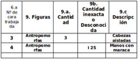

9 - FIGURAS

Utilícese la letra "i" (incompleto) delante del número,
para los casos en que la cantidad de figuras, sea mayor que la expuesta,
pero no se pueda cuantificar con exactitud,
cuánto mayor por la altura de los grabados, por efectos de erosión u otros.
Por ejemplo, en la cara 4 de una roca hay más de 25 puntos,
sin poderse cuantificar con exactitud esa cifra.
Se coloca entonces: i-25.
Para aquellos casos en que se desconozcan las cantidades totalmente,
se usará "i" en lugar de números.